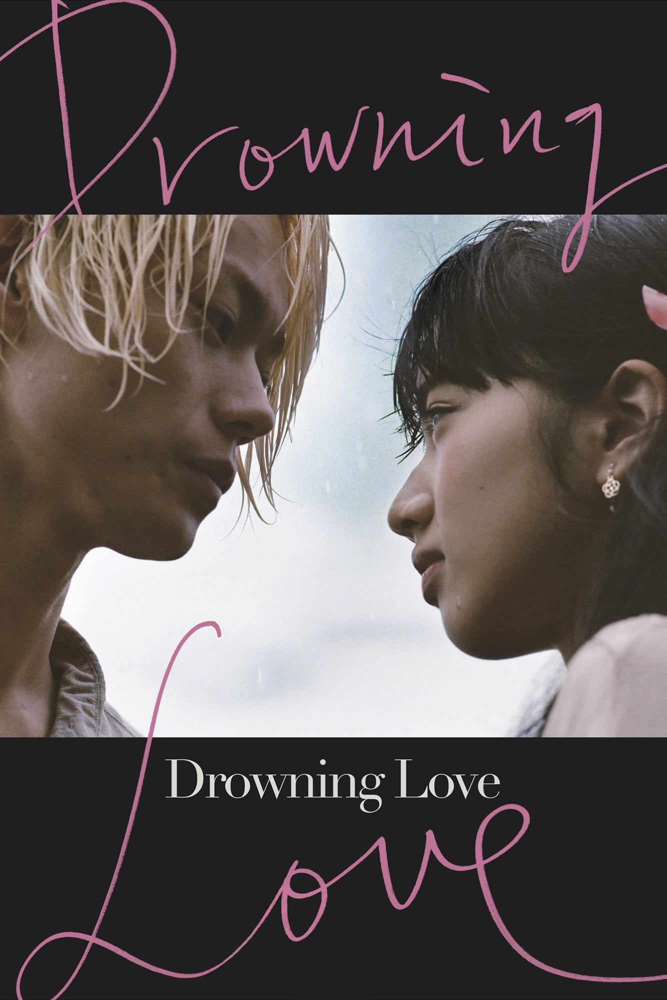
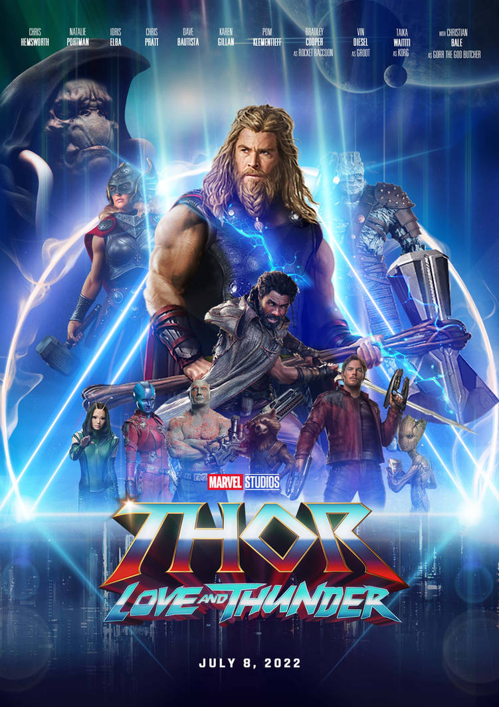

Howls Moving Castle
Enchanting and full of whimsy.
Revolving around a hat-maker who was turned into an old lady for being close to the Wizard Howl, Howl's Moving Castle was phenomenal. Although not following original plotline of the novel by Diana Wynne Jones, Hayao Miyazaki creates a captivating and immersive world to viewers. The picturesque animation interspersed with melodious background music sets the mood for the fantasmal and mystic aesthetic. The characters, especially Sophie and Howl and their conflicts, internal and external, are well presented with redeemable character arcs. Every character is endearing and qute lovely. The strong thematic messages regarding the consequences of war and the shallowness of beauty were also skillfully interdispersed within the plot.
I loved this movie. 10/10
Enchanting and full of whimsy.
Revolving around a hat-maker who was turned into an old lady for being close to the Wizard Howl, Howl's Moving Castle was phenomenal. Although not following original plotline of the novel by Diana Wynne Jones, Hayao Miyazaki creates a captivating and immersive world to viewers. The picturesque animation interspersed with melodious background music sets the mood for the fantasmal and mystic aesthetic. The characters, especially Sophie and Howl and their conflicts, internal and external, are well presented with redeemable character arcs. Every character is endearing and qute lovely. The strong thematic messages regarding the consequences of war and the shallowness of beauty were also skillfully interdispersed within the plot.
I loved this movie. 10/10

Drowning Love
Dark, raw, yet strangely poetic.This is a story of youthful love that is toxic and healing at the same time.
The movie follows a young model who moves to a small town in order to help take care of her ailing grandfather’s business. Although some may think the plot to be confusing, I though it was rather straightfoward until the open-ended ending. The cinematic choices made by the director wrapped the entire movie together very artfully. The colors, lighting, backgrounds and casting, all were extremely well done and stunningly executed. Everything was picturesque.
Drowning Love might not be for everyone due to its ambiguity and stylistic choices but I thoroughly enjoyed this movie. 7.5/10
Dark, raw, yet strangely poetic.This is a story of youthful love that is toxic and healing at the same time.
The movie follows a young model who moves to a small town in order to help take care of her ailing grandfather’s business. Although some may think the plot to be confusing, I though it was rather straightfoward until the open-ended ending. The cinematic choices made by the director wrapped the entire movie together very artfully. The colors, lighting, backgrounds and casting, all were extremely well done and stunningly executed. Everything was picturesque.
Drowning Love might not be for everyone due to its ambiguity and stylistic choices but I thoroughly enjoyed this movie. 7.5/10

Inception
Mind boggling and makes one second guess
The first time I watched this movie was in my Psychology class, fitting I know, and the ending had completely gone over my head but after a second watch, everything fit into place.It's absolutely mind-bending, fact-filled, and suspenseful. I didn't even expect that twist about halfway through the movie ( no spoilers). The acting is great, especially Leo Dicaprio and Marion Cottilard's, it's a big part of why this movie is so good. They really act like it's happening in real life. The cast fit the characters to a tee.
This thriller certainly kept me on the edge of my seat. 8.5/10
Mind boggling and makes one second guess
The first time I watched this movie was in my Psychology class, fitting I know, and the ending had completely gone over my head but after a second watch, everything fit into place.It's absolutely mind-bending, fact-filled, and suspenseful. I didn't even expect that twist about halfway through the movie ( no spoilers). The acting is great, especially Leo Dicaprio and Marion Cottilard's, it's a big part of why this movie is so good. They really act like it's happening in real life. The cast fit the characters to a tee.
This thriller certainly kept me on the edge of my seat. 8.5/10

Thor: Love and Thunder
A fun ride
Going into this movie, I had never watched a Marvel movie so do please take this review with a grain of salt. Thor: Love and Thunder was an action-packed, emotional romantic journey and quite comedic too. I loved watching Thor's character development since it honestly was a series of humbling events lol. The special effects and film choices were nicely done.
I may have not been able to understand any of the references but I can confidently say that Love and Thunder delivered wholesome entertainment and a visually grandiose theatre experience. Definitely recommend. 8/10
A fun ride
Going into this movie, I had never watched a Marvel movie so do please take this review with a grain of salt. Thor: Love and Thunder was an action-packed, emotional romantic journey and quite comedic too. I loved watching Thor's character development since it honestly was a series of humbling events lol. The special effects and film choices were nicely done.
I may have not been able to understand any of the references but I can confidently say that Love and Thunder delivered wholesome entertainment and a visually grandiose theatre experience. Definitely recommend. 8/10

Ride Your Wave
Emotional and Bittersweet
At the beginning, this anime was really sweet, I had no idea I would have been sobbing straight through it and even afterwards. I am in love with the storyline and the characters within it. Hinako and Minato, the main characters, were so endearing and watching Hinako's character development and struggle with greif was really moving. The animation and color choices were unique.
Though the story was sad, but it is still very wholesome and nice. I think it is a perfect summer holiday activity. 8/10
Emotional and Bittersweet
At the beginning, this anime was really sweet, I had no idea I would have been sobbing straight through it and even afterwards. I am in love with the storyline and the characters within it. Hinako and Minato, the main characters, were so endearing and watching Hinako's character development and struggle with greif was really moving. The animation and color choices were unique.
Though the story was sad, but it is still very wholesome and nice. I think it is a perfect summer holiday activity. 8/10

Weathering With You
Pure delight and tearfully gorgeous
This story follows a runaway teenaged boy who meets a sunshine girl in Tokyo. It dwells on the theory of fate, where one meets his other half through supernatural means and grit. This is the film's main theme, where the environment is used to appeal than solidify as a breathtaking experience for most audiences. Although instilled with fantasy and Shinto mythology, there is still a hint of reality. References of global warming, child protective services, and struggles in a capitalist society are woven in masterfully.
Weathering with You is a beautifully animated film about young, spontaneous love that transcends mother nature. 8.5/10
Pure delight and tearfully gorgeous
This story follows a runaway teenaged boy who meets a sunshine girl in Tokyo. It dwells on the theory of fate, where one meets his other half through supernatural means and grit. This is the film's main theme, where the environment is used to appeal than solidify as a breathtaking experience for most audiences. Although instilled with fantasy and Shinto mythology, there is still a hint of reality. References of global warming, child protective services, and struggles in a capitalist society are woven in masterfully.
Weathering with You is a beautifully animated film about young, spontaneous love that transcends mother nature. 8.5/10